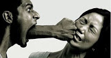

Acoso Sexual
El acoso o hostigamiento sexual es aquél comportamiento de naturaleza sexual que recibe una persona de otra sin desearlo ni pedirlo. Puede incluyir:
- Miradas
- Comentarios
- Acercamiento
- Contacto físico
- Insinuaciones sexuales
Efectos psicologicos
- Agresividad
- Ansiedad
- Depresión
- Baja autoestima
- Miedo generalizado
Efectos Conductuales
- Consumo de drogas y alcohol
- Conductas auto lesivas o suicidas
- Bajada de rendimiento en la rutina diaria
Efectos Físicas
- Pesadillas y/o problemas de sueño
- Cambios de hábitos alimenticios
- Perdida de control
- Dolores crónicos generales
Consecuencias Sexuales
- Problemas con la orientación sexual
- Falta de satisfacción sexual
- Incapacidad para el orgasmo
- Aumenta la probabilidad de entrar a la prostitución
Consecuencias Sociales
- Aislamiento
- Déficit en habilidades sociales
- Retraimiento social
- Conductas asociales

Consecuencias Interpersonales
- Desconfianza hacía el sexo opuesto
- Dificultades para establecer relaciones espontáneas con el sexo opuesto